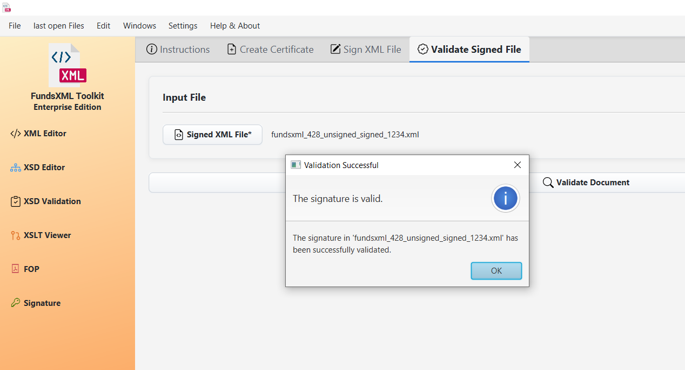

XML Digital Signatures¶
Last Updated: December 2025 | Version: 1.1.0
This tool lets you digitally sign XML documents and verify signatures. A digital signature proves that a document is authentic and hasn't been changed.
Overview¶
 The digital signature interface
The digital signature interface
What Can You Do?¶
| Tab | Description |
|---|---|
| Create Certificate | Generate your own digital ID (keystore) |
| Sign XML File | Add a digital signature to XML files |
| Validate Signed File | Check if signed documents are valid |
| Expert Mode | Advanced options for power users |
Toolbar¶
| Button | Shortcut | Description |
|---|---|---|
| Add Favorite | Ctrl+D | Add current file to favorites |
| Favorites | Ctrl+Shift+D | Toggle favorites panel |
| Help | F1 | Show help |
1. Create a Certificate¶
Before signing documents, you need a digital certificate (like a digital ID card).
 Certificate creation form with DN details
Certificate creation form with DN details
Certificate Details (Distinguished Name)¶
| Field | Description | Example |
|---|---|---|
| Common Name (CN) | Your name or the certificate name | John Smith |
| Organization (O) | Your company or organization | Acme Corp |
| Organizational Unit (OU) | Your department | IT Security |
| Locality (L) | Your city | Vienna |
| State (ST) | Your state or province | Vienna |
| Country (C) | Two-letter country code | AT |
Keystore Security¶
| Field | Description |
|---|---|
| Keystore Password | Password to protect the keystore file |
| Key Password | Password to protect the private key (can be same as keystore) |
How to Create a Certificate¶
- Go to the "Create Certificate" tab
- Fill in the Distinguished Name fields
- Set passwords for the keystore and key
- Click "Create Certificate"
- Choose where to save the keystore file (
.jks) - Keep the keystore file and passwords safe!
Important: Remember your passwords! They cannot be recovered.
2. Sign an XML Document¶
 Document signing interface
Document signing interface
Input Files¶
| Field | Description |
|---|---|
| XML File | The document you want to sign |
| Keystore File | Your certificate keystore (.jks) |
Keystore Credentials¶
| Field | Description |
|---|---|
| Keystore Password | Password for the keystore file |
| Key Password | Password for the private key |
| Key Alias | Name of the key in the keystore |
Output Settings¶
| Field | Description |
|---|---|
| Output File | Where to save the signed XML |
How to Sign a Document¶
- Go to the "Sign XML File" tab
- Click "Browse" to select your XML file
- Click "Browse" to select your keystore file
- Enter your keystore password and key password
- Select the key alias (if multiple keys exist)
- Choose where to save the signed output
- Click "Sign"
The signed file includes the original content plus a digital signature block.
3. Verify a Signature¶
 Verifying a signed document
How to Verify a Signature¶
- Go to the "Validate Signed File" tab
- Click "Browse" to select the signed XML file
- Click "Validate"
- See the result in the status area
Validation Results¶
| Status | Meaning |
|---|---|
| Valid | The signature is authentic and document unchanged |
| Invalid | The signature failed verification |
| No Signature | The document doesn't contain a signature |
What the Verification Checks¶
| Check | What It Means |
|---|---|
| Authenticity | The signature was created by the certificate holder |
| Integrity | The document hasn't been changed since signing |
| Certificate | The signing certificate is valid |
4. Expert Mode¶
For users who need more control over the signing process.
 Expert mode with advanced options
Expert mode with advanced options
Key Generation Options¶
| Option | Values | Description |
|---|---|---|
| Key Algorithm | RSA, DSA, EC | Cryptographic algorithm for the key pair |
| Key Size | 2048, 3072, 4096 (bits) | Larger = more secure but slower |
Signature Options¶
| Option | Values | Description |
|---|---|---|
| Signature Algorithm | SHA256withRSA, SHA384withRSA, SHA512withRSA, etc. | Hash and signing algorithm combination |
Certificate Options¶
| Option | Description |
|---|---|
| Validity (Days) | How long the certificate is valid (e.g., 365 days) |
| Subject Alternative Names | Additional identities (email, DNS, IP) |
When to Use Expert Mode¶
- Higher Security: Use larger key sizes (4096-bit) or stronger algorithms
- Compliance: Meet specific security standards (e.g., government, financial)
- Extended Validity: Create certificates valid for longer periods
- Alternative Names: Include email addresses or domain names in certificate
Favorites Integration¶
Save frequently used files for quick access:
- Add Favorite (Ctrl+D) - Add current file to favorites
- Favorites (Ctrl+Shift+D) - Show/hide the favorites panel
The favorites panel appears on the right side and provides quick access to your saved keystores, XML files, and signed documents.
Keyboard Shortcuts¶
| Shortcut | Action |
|---|---|
| Ctrl+D | Add to favorites |
| Ctrl+Shift+D | Toggle favorites |
| F1 | Help |
Tips¶
- Keep your keystore safe - It's your digital identity
- Remember your passwords - They cannot be recovered
- Signed files are new files - The original is not modified
- Use strong passwords - At least 12 characters with mixed case, numbers, symbols
- Backup your keystore - Store copies in secure locations
- Check validity regularly - Certificates expire after the validity period
Troubleshooting¶
| Problem | Solution |
|---|---|
| Wrong password | Double-check keystore and key passwords |
| Key not found | Verify the key alias exists in the keystore |
| Validation fails | Document may have been modified after signing |
| Certificate expired | Create a new certificate with Expert Mode |
Supported Formats¶
| Type | Formats |
|---|---|
| Input | XML files (.xml) |
| Keystores | Java Keystore (.jks) |
| Output | Signed XML with embedded signature |
Common Questions¶
What if I lose my password?¶
Unfortunately, passwords cannot be recovered. You'll need to create a new certificate.
Can I sign multiple files at once?¶
Currently, files must be signed one at a time.
What signature type is used?¶
The tool creates enveloped XML signatures (XMLDSig) where the signature is embedded within the XML document.
Can I sign PDFs?¶
No, this tool is specifically for XML documents. Use the PDF Generator for PDF-related tasks.
Navigation¶
| Previous | Home | Next |
|---|---|---|
| PDF Generator (FOP) | Home | Auto-Completion |
All Pages: XML Editor | XML Features | XSD Tools | XSD Validation | XSLT Viewer | XSLT Developer | FOP/PDF | Signatures | IntelliSense | Schematron | Favorites | Templates | Tech Stack | Licenses